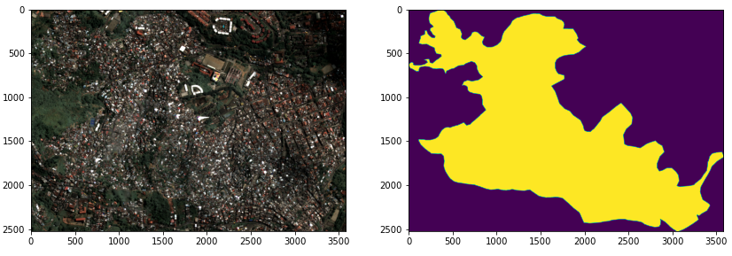

Datasets¶
The main aim of this library is to feed raster (georeferenced image) data to computer vision algorithms such as convolutional neural networks. At the time of writing this is mostly limited to semantic segmentation and offshoots thereof.
In (supervised) semantic segmentation, an algorithm sees a number of (image, mask) pairs, and tries to learn how to reproduce the mask from the image. The image is typically a georeferenced earth observation photograph (satellite or aerial). The mask is itself an image representing exactly the same scene as the image, but where each pixel value denotes an abstract classification given to the corresponding pixel at the same location in the image.
The gim_cv.datasets module provides classes to specify datasets comprised of
either (image, mask) pairs (which can be used for training models), or just images
(which can be interpreted by trained models to infer masks). The first stage of being
able to experiment with models is then to select or define a dataset.
Accessing datasets¶
To select a dataset, import the datasets module and list the available datasets:
>> import gim_cv.datasets as datasets
>> datasets.list_datasets(skip_missing_files=True)
['test_jp2_shape',
'test_tif',
'belgium_topo_1969',
'belgium_ortho_2001',
'belgium_ortho_2009',
'belgium_ortho_2015']
We can access the Dataset object with the gim_cv.datasets.get_dataset() function as:
>> test_tif_dataset = datasets.get_dataset('test_tif')
Dataset(tag=test_tif, spatial_resolution=0.25)
>> print(list(zip(test_tif_dataset.image_paths, test_tif_dataset.mask_paths)))
[(PosixPath('/home/root/tests/resources/test_data_tif/Medellin_40cm.tif'),
PosixPath('/home/root/tests/resources/test_data_tif/Medellin_ground_truth.tif'))]
This dataset is part of the unit testing resources and should always be in the repository.
The dataset object is comprised of a list of image files and optionally a list of corresponding mask files. If the latter is present, this can be used for inference and training (using the masks as ground truth), and if it is missing then it can only be used for inference. At the moment each dataset is also specified by a “tag” attribute (a unique string name) and must be assigned a spatial resolution (ground sampling distance) in metres.
Defining datasets on disk¶
You can define a dataset by pointing to the files making it up like this:
>> my_ds = datasets.Dataset(tag='my_ds',
image_paths = [
'./data/some_img1.tif',
'./data/some_img2.tif'
],
mask_paths = [], # say this one doesn't have any ground truth
spatial_resolution=0.5)
If this is done in gim_cv.datasets, this dataset will be available in future by importing
the datasets module and using gim_cv.datasets.get_dataset() and supplying the tag. If done
locally in a script, it will be usable there and not persist. You can check that the files that
you’ve pointed to exist with the gim_cv.datasets.Dataset.all_files_exist attribute.
If both images and masks are provided, there should be one mask file per image file and these should correspond element-by-element.
The image formats currently supported are .tif and .jp2 files. tif is preferred
due to the lack of compression rendering it orders of magnitude faster to read from/write to.
Mask files can similarly be either of these image file formats (if the pixel masks are stored
directly as images). A more common scenario is that the mask files are in vector format (.shp,
.gpkg, .geojson etc.) and only produce rasterised pixel-level masks (at a given
spatial resolution) at runtime as a preprocessing step. These also have the advantage of being
much smaller than image files. Currently .shp is supported and the other vector formats can
easily be converted into this.
Defining downloadable datasets¶
Datasets can also point to remote resources. Rather than providing image_paths and mask_paths
arguments directly, one can implement and assign a function to the attributes image_download_fn,
mask_download_fn or all_download_fn. This function is expected to download files and return
a list of the paths to these files on disk (in the latter case, two lists).
Once these attributes are assigned, the corresponding
Dataset object will have access to the (asynchronous) methods download_image_files,
download_mask_files or download_all_files correspondingly. These will perform the
download of the files and set image_paths and mask_paths appropriately when complete.
For example:
>> from gim_cv.orchestration import download_images_to_directory
>> # now assign this function to serve as the download method for our
>> # dataset, which is convenient for when the total filesize is very large
>> my_ds.image_download_fn = (
partial(download_images_to_directory,
file_urls=['http://blabla.com/file2.tif', 'http://blabla.com/file1.tif'],
target_directory = f'./data/images_{my_ds.tag}',
overwrite=False)
)
Now one can download the image files by running:
await my_ds.download_image_files()
in an asynchronous context or:
asyncio.run(my_ds.download_image_files())
in a synchronous one.
Using Datasets with models¶
Dataset objects are equipped with the methods load_training_data()
and load_inference_data() which are used in conjuction with
Preprocessing pipelines to create image and mask arrays ready for training or inference.
These will be discussed in the following sections.
Recommendations¶
Converting to TIF¶
It is highly recommended to use .tif format rasters for datasets.
Conversion of .jp2 rasters to .tif can be done easily with gdal_translate.
This script is available in the container environment and is documented here. However
due to the stock JPEG2000 driver being inefficient the conversion is quite slow out of the
box.
Tile sizes¶
Often raster datasets on which one will want to run inference will be quite large. If this is the case it is a good idea when defining datasets to retile large rasters into many smaller tiles as this will make inference more robust.
For example, if inference for some reason fails midway through, almost half of the results will have already been written to file successfully as opposed to ending up with half of one giant potentially corrupt raster.
I like to use a tile size of 5120 * 5120, as this divides 256 and 1024 (the typical training and inference patch sizes on a V100 GPU). On a smaller GPU like a T4 (like on an AWS g4dn instance) 5376 divides 256 and 896 (the inference patch size which fits in VRAM on that machine). This way each tile divides exactly into patches that the GPU will process at inference time.
Generally, this GDAL cheat sheet is super useful for the different cases you might encounter of data wrangling.